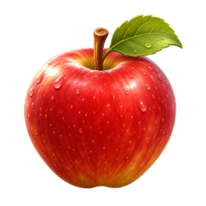
apple · 苹果256×256 · 68.1 KiB · RGBA 256 KiBfruit-assets/apple.png制作 #84 · 普通怪 textured-split-legscharacter-assets/zombie-apple-textured.pngBoss/特殊怪基础形态：sprite-torso-procedural-legs；不含额外装甲和特效。本页记录运行现状，不作为新位图母版或视觉批准。当前资源目录直接引用；这是素材目录，不是实机截图或新样张。图片统一置于160×160 CSS像素框，仅便于风格对比，不代表游戏实际尺寸。RGBA为宽×高×4估算，未含纹理副本和画布。

apple · 苹果256×256 · 68.1 KiB · RGBA 256 KiBfruit-assets/apple.png制作 #84 · 普通怪 textured-split-legscharacter-assets/zombie-apple-textured.pngBoss/特殊怪基础形态：sprite-torso-procedural-legs；不含额外装甲和特效。本页记录运行现状，不作为新位图母版或视觉批准。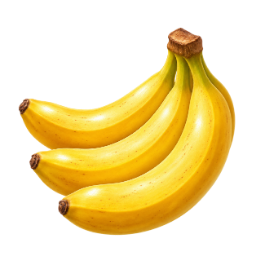
banana · 香蕉256×256 · 54.5 KiB · RGBA 256 KiBfruit-assets/banana.png制作 #84 · 普通怪 sprite-torso-procedural-legsassets/images/fortress/zombie-body-banana.pngBoss/特殊怪基础形态：sprite-torso-procedural-legs；不含额外装甲和特效。本页记录运行现状，不作为新位图母版或视觉批准。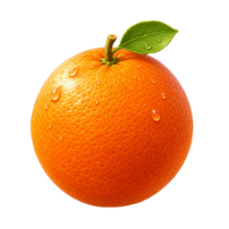
orange · 橙子256×256 · 62.4 KiB · RGBA 256 KiBfruit-assets/orange.png制作 #84 · 普通怪 sprite-torso-procedural-legsassets/images/fortress/zombie-body-orange.pngBoss/特殊怪基础形态：sprite-torso-procedural-legs；不含额外装甲和特效。本页记录运行现状，不作为新位图母版或视觉批准。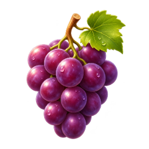
grape · 葡萄256×256 · 60.8 KiB · RGBA 256 KiBfruit-assets/grape.png制作 #84 · 普通怪 sprite-torso-procedural-legsassets/images/fortress/zombie-body-grape.pngBoss/特殊怪基础形态：sprite-torso-procedural-legs；不含额外装甲和特效。本页记录运行现状，不作为新位图母版或视觉批准。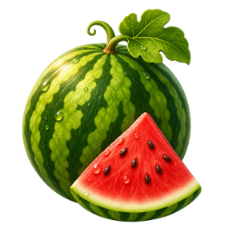
watermelon · 西瓜256×256 · 83.5 KiB · RGBA 256 KiBfruit-assets/watermelon.png制作 #84 · 普通怪 sprite-torso-procedural-legsassets/images/fortress/zombie-body-watermelon.pngBoss/特殊怪基础形态：sprite-torso-procedural-legs；不含额外装甲和特效。本页记录运行现状，不作为新位图母版或视觉批准。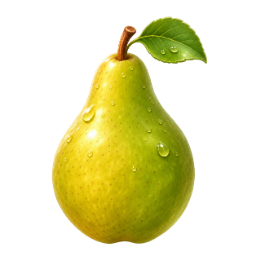
pear · 梨256×256 · 49.3 KiB · RGBA 256 KiBfruit-assets/pear.png制作 #84 · 普通怪 sprite-torso-procedural-legsassets/images/fortress/zombie-body-pear.pngBoss/特殊怪基础形态：sprite-torso-procedural-legs；不含额外装甲和特效。本页记录运行现状，不作为新位图母版或视觉批准。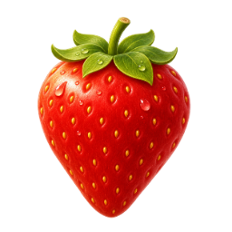
strawberry · 草莓256×256 · 59.5 KiB · RGBA 256 KiBfruit-assets/strawberry.png制作 #84 · 普通怪 sprite-torso-procedural-legsassets/images/fortress/zombie-body-strawberry.pngBoss/特殊怪基础形态：sprite-torso-procedural-legs；不含额外装甲和特效。本页记录运行现状，不作为新位图母版或视觉批准。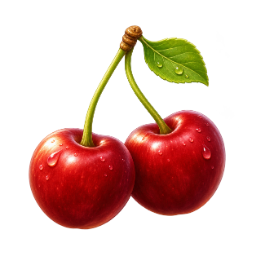
cherry · 樱桃256×256 · 52.1 KiB · RGBA 256 KiBfruit-assets/cherry.png制作 #84 · 普通怪 sprite-torso-procedural-legsassets/images/fortress/zombie-body-cherry.pngBoss/特殊怪基础形态：sprite-torso-procedural-legs；不含额外装甲和特效。本页记录运行现状，不作为新位图母版或视觉批准。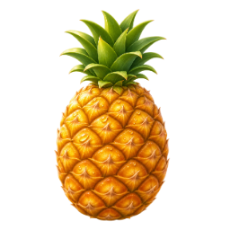
pineapple · 菠萝256×256 · 61.1 KiB · RGBA 256 KiBfruit-assets/pineapple.png制作 #84 · 普通怪 sprite-torso-procedural-legsassets/images/fortress/zombie-body-pineapple.pngBoss/特殊怪基础形态：sprite-torso-procedural-legs；不含额外装甲和特效。本页记录运行现状，不作为新位图母版或视觉批准。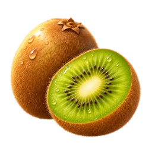
kiwi · 猕猴桃256×256 · 85.8 KiB · RGBA 256 KiBfruit-assets/kiwi.png制作 #84 · 普通怪 sprite-torso-procedural-legsassets/images/fortress/zombie-body-kiwi.pngBoss/特殊怪基础形态：sprite-torso-procedural-legs；不含额外装甲和特效。本页记录运行现状，不作为新位图母版或视觉批准。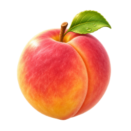
peach · 桃子256×256 · 63.2 KiB · RGBA 256 KiBfruit-assets/peach.png制作 #84 · 普通怪 sprite-torso-procedural-legsassets/images/fortress/zombie-body-peach.pngBoss/特殊怪基础形态：sprite-torso-procedural-legs；不含额外装甲和特效。本页记录运行现状，不作为新位图母版或视觉批准。animal-assets/bear.png制作 #85 · 普通怪 procedural-animal程序绘制，尚未接入新动物战斗位图Boss/特殊怪基础形态：procedural-animal；不含额外装甲和特效。本页记录运行现状，不作为新位图母版或视觉批准。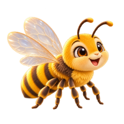
bee · 蜜蜂256×256 · 68.1 KiB · RGBA 256 KiBanimal-assets/bee.png制作 #85 · 普通怪 procedural-animal程序绘制，尚未接入新动物战斗位图Boss/特殊怪基础形态：procedural-animal；不含额外装甲和特效。本页记录运行现状，不作为新位图母版或视觉批准。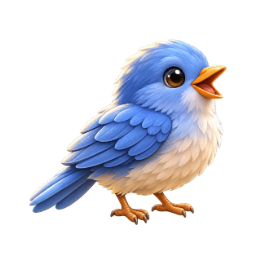
bird · 鸟256×256 · 55.1 KiB · RGBA 256 KiBanimal-assets/bird.png制作 #85 · 普通怪 procedural-animal程序绘制，尚未接入新动物战斗位图Boss/特殊怪基础形态：procedural-animal；不含额外装甲和特效。本页记录运行现状，不作为新位图母版或视觉批准。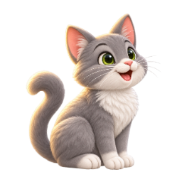
cat · 猫256×256 · 63.3 KiB · RGBA 256 KiBanimal-assets/cat.png制作 #85 · 普通怪 procedural-animal程序绘制，尚未接入新动物战斗位图Boss/特殊怪基础形态：procedural-animal；不含额外装甲和特效。本页记录运行现状，不作为新位图母版或视觉批准。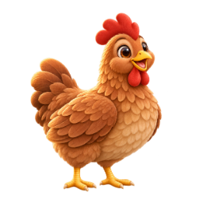
chicken · 鸡256×256 · 57.2 KiB · RGBA 256 KiBanimal-assets/chicken.png制作 #85 · 普通怪 procedural-animal程序绘制，尚未接入新动物战斗位图Boss/特殊怪基础形态：procedural-animal；不含额外装甲和特效。本页记录运行现状，不作为新位图母版或视觉批准。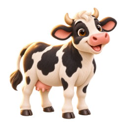
cow · 牛256×256 · 66.3 KiB · RGBA 256 KiBanimal-assets/cow.png制作 #85 · 普通怪 procedural-animal程序绘制，尚未接入新动物战斗位图Boss/特殊怪基础形态：procedural-animal；不含额外装甲和特效。本页记录运行现状，不作为新位图母版或视觉批准。animal-assets/dog.png制作 #85 · 普通怪 procedural-animal程序绘制，尚未接入新动物战斗位图Boss/特殊怪基础形态：procedural-animal；不含额外装甲和特效。本页记录运行现状，不作为新位图母版或视觉批准。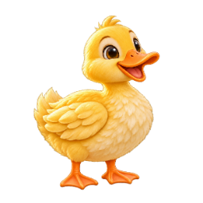
duck · 鸭256×256 · 49.0 KiB · RGBA 256 KiBanimal-assets/duck.png制作 #85 · 普通怪 procedural-animal程序绘制，尚未接入新动物战斗位图Boss/特殊怪基础形态：procedural-animal；不含额外装甲和特效。本页记录运行现状，不作为新位图母版或视觉批准。animal-assets/elephant.png制作 #85 · 普通怪 procedural-animal程序绘制，尚未接入新动物战斗位图Boss/特殊怪基础形态：procedural-animal；不含额外装甲和特效。本页记录运行现状，不作为新位图母版或视觉批准。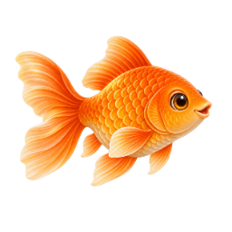
fish · 鱼256×256 · 55.7 KiB · RGBA 256 KiBanimal-assets/fish.png制作 #85 · 普通怪 procedural-animal程序绘制，尚未接入新动物战斗位图Boss/特殊怪基础形态：procedural-animal；不含额外装甲和特效。本页记录运行现状，不作为新位图母版或视觉批准。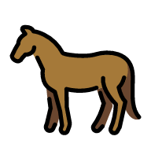
horse · 马192×192 · 7.6 KiB · RGBA 144 KiBanimal-assets/horse.png制作 #85 · 普通怪 procedural-animal程序绘制，尚未接入新动物战斗位图Boss/特殊怪基础形态：procedural-animal；不含额外装甲和特效。本页记录运行现状，不作为新位图母版或视觉批准。animal-assets/lion.png制作 #85 · 普通怪 procedural-animal程序绘制，尚未接入新动物战斗位图Boss/特殊怪基础形态：procedural-animal；不含额外装甲和特效。本页记录运行现状，不作为新位图母版或视觉批准。animal-assets/panda.png制作 #85 · 普通怪 procedural-animal程序绘制，尚未接入新动物战斗位图Boss/特殊怪基础形态：procedural-animal；不含额外装甲和特效。本页记录运行现状，不作为新位图母版或视觉批准。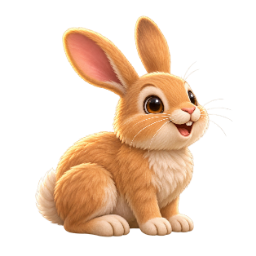
rabbit · 兔子256×256 · 62.9 KiB · RGBA 256 KiBanimal-assets/rabbit.png制作 #85 · 普通怪 procedural-animal程序绘制，尚未接入新动物战斗位图Boss/特殊怪基础形态：procedural-animal；不含额外装甲和特效。本页记录运行现状，不作为新位图母版或视觉批准。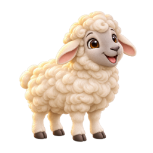
sheep · 羊256×256 · 61.0 KiB · RGBA 256 KiBanimal-assets/sheep.png制作 #85 · 普通怪 procedural-animal程序绘制，尚未接入新动物战斗位图Boss/特殊怪基础形态：procedural-animal；不含额外装甲和特效。本页记录运行现状，不作为新位图母版或视觉批准。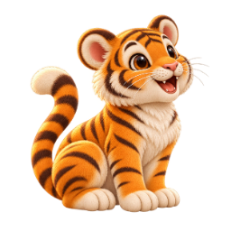
tiger · 老虎256×256 · 76.7 KiB · RGBA 256 KiBanimal-assets/tiger.png制作 #85 · 普通怪 procedural-animal程序绘制，尚未接入新动物战斗位图Boss/特殊怪基础形态：procedural-animal；不含额外装甲和特效。本页记录运行现状，不作为新位图母版或视觉批准。